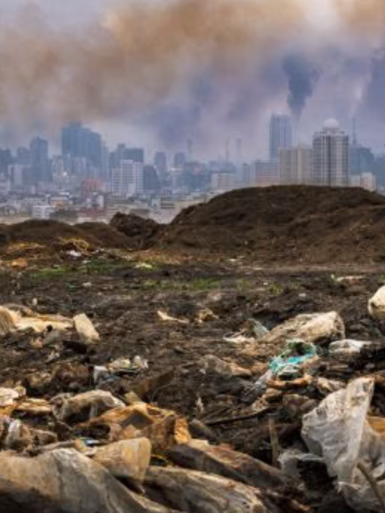
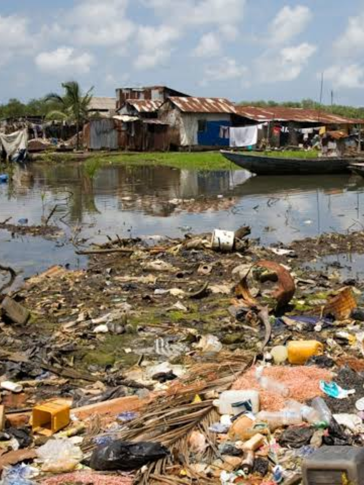
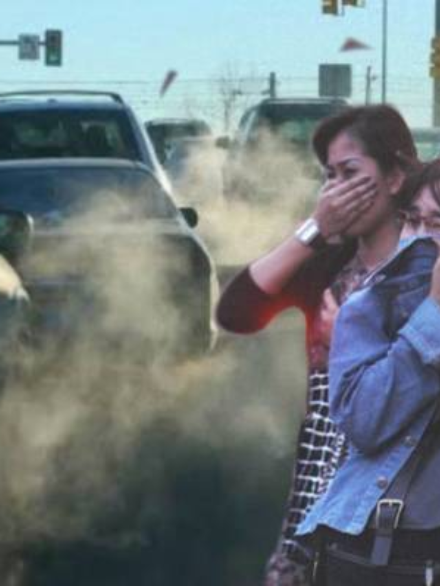
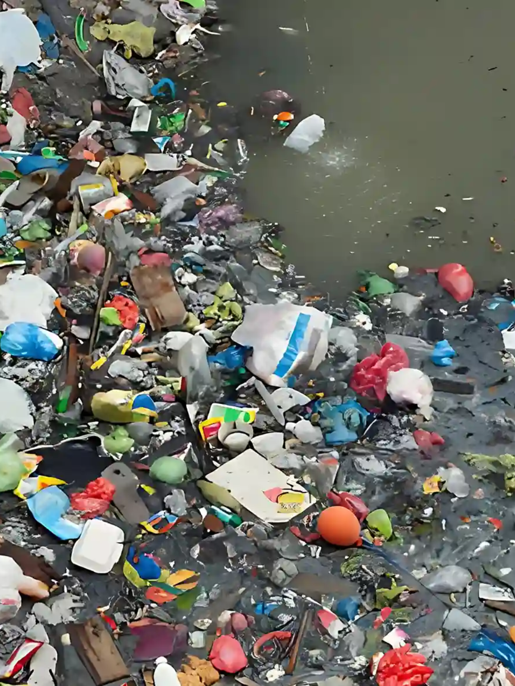
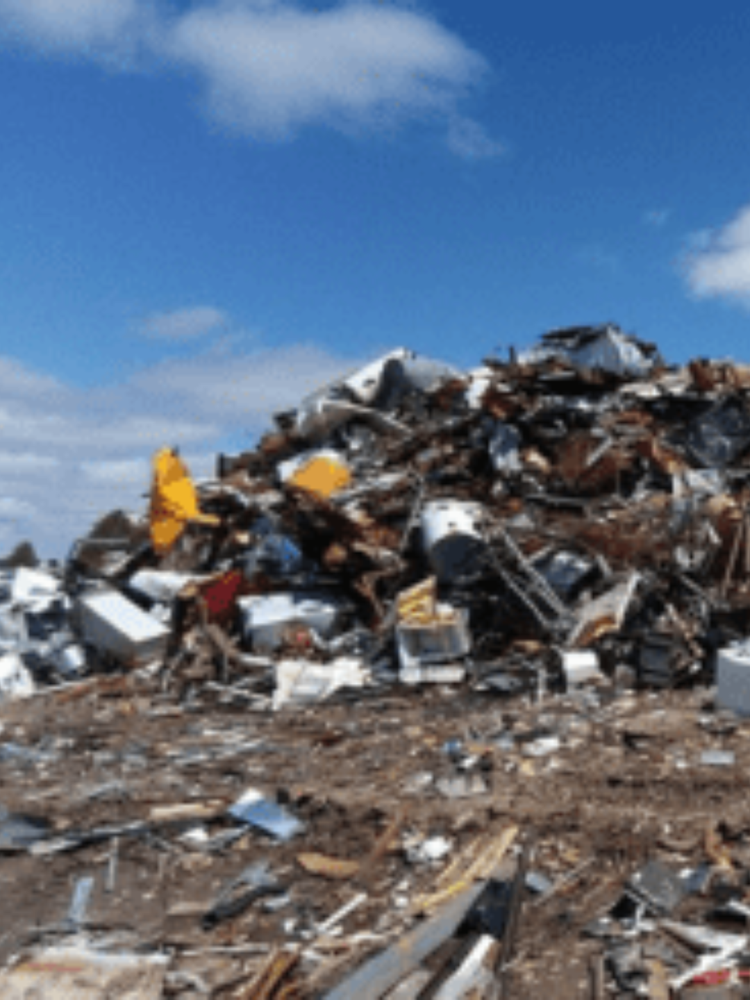
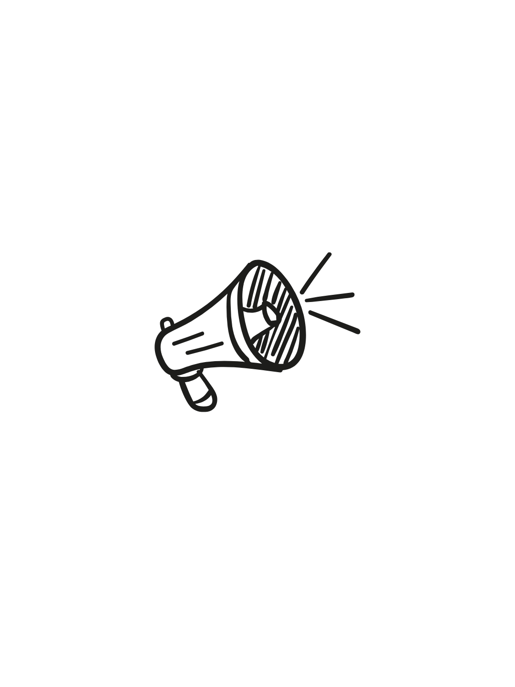
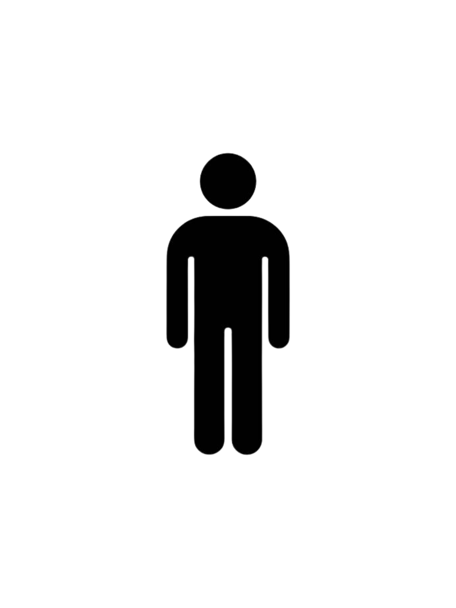

Pencemaran Linkungan ⋆˚಄｡
oleh Louisa Chandra!


Pencemaran lingkungan telah menjadi ancaman yang besar pada zaman sekarang; kemanusiaan tergantung pada lingkungan dan kami harus menjaganya. Namun, pada zaman sekarang, pencemaran lingkungan sering ditemukan. Apa itu pencemaran lingkungan? Pencemaran lingkungan terjadi saat zat, energi ataupun komponen lain ke dalam lingkungan akibat aktivitas manusia atau proses alam yang menurunkan kualitas lingkungan hingga tidak dapat berfungsi sesuai peruntukannya. Pencemaran ini terjadi karena kelalaian manusia. Efek pencemaran lingkungan pun ini juga berefek buruk pada manusia dan lingkungan sekitar. Pencemaraan lingkungan dibagi menjadi beberapa bagian; yaitu udara, air, tanah dan suara. Semua pencemar tersebut membawa efek buruk bagi manusia namun pencemaraan biasanya terjadi karena manusia.
--- Apa jenis-jenis pencemaran lingkungan?
Pencemaran Udara

➬Pengertian: Peristiwa dimana ada penyampurannya zat, energi atau komponen berbahaya pada udara ambien.
➬Penyebab: Masuknya zat polutan (berupa gas, partikel, zat kimia) ke atmosfer bumi.
➬Efek: Manusia menjadi sakit batuk/paru-paru karena kurangnya kualitas udara yang baik.
➬Contoh: Asap kendaraan transportasi dan emisi gas buang pabrik.
Pencemaran Air

➬Pengertian: Masuknya makhluk hidup, zat, energi atau komponen lain ke dalam air yang menyebabkan penurunan kualitas air.
➬Penyebab: Masuknya berbagai jenis limbah dan zat berbahaya dari aktivitas manusia/alami ke dalam badan air.
➬Efek: Keracunan air pada manusia yang menyebabkan manusia menjadi sakit.
➬Contoh: Pembuangan limbah cair industri, rumah tangga dan pestisida.
Pencemaran Tanah

➬Pengertian: Kondisi ketika tanah mengalami kontaminasi/perubahan sifat alami sehingga zat/polutan/bahan bahaya masuk.
➬Penyebab: Masuknya zat atau polutan ataupun kontaminan berbahaya ke dalam lapisan tanah yang merusak kesuburan tanah.
➬Efek: Keracunan dan gangguan pada proses tumbuhnya tanaman.
➬Contoh: Penumpukan sampah plastik dan limbah B3.
Pencemaran Suara

➬Pengertian: Gangguan pada lingkungan yang diakibatkan bunyi/suara berlebihan yang menganggu.
➬Penyebab: Aktivitas manusia, baik di lingkungan perkotaan, industri maupun rumah tangga.
➬Efek: Stres dan kurang fokus pada manusia dan mahkluk hidup secara keseluruhan.
➬Contoh: Gangguan lingkungan akibat bunyi yang berlebihan yang menganggu kenyamanan makhluk hidup.
Jadi, apa solusinya??

Kebiasaan sehari-hari
➬ Memilah sampah dari rumah
➬ Mengurangi plastik sekali pakai
➬ Berhati-hati dan waspada efek pencemaran lingkungan
➬ Mendaur ulang sampah dan plastik
Pergerakan dari korporasi besar:
➬ Negara: Menyediakan tempat sampah untuk memilah sampah lebih mudah.
➬ Gereja Katolik: Mengajak umat Gereja untuk melakukan aksi menjaga lingkungan sesuai dengan tema KAJ 2026.
➬ UN: UNEP dan mengadakan badan terkait untuk mengatasi krisis iklim, polusi dan hilangnya keanekaragaman hayati global.
Akhir kata... ✉
Jadi, kami harus menjaga lingkungan dengan tujuan mereservasikan lingkungan tersebut untuk generasi dan masa depan. Selain itu, kami juga menjaga lingkungan untuk diri kami sendiri pada masa ini. Kami, sebagai manusia, telah diberi anugerah dari Tuhan yaitu lingkungan, dan kami diminta untuk menjaga lingkungan tersebut. Dengan itu, mari kita menjaga lingkungan kami, tidak hanya untuk diri sendiri, namun juga untuk lingkungan dan masyarakat sekitar, makhluk hidup (termasuk hewan dan tumbuhan), serta untuk masa depan!